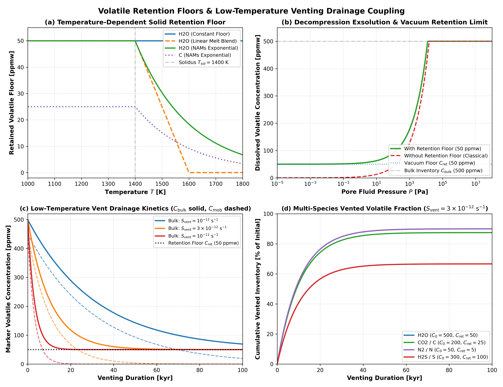

Volatile Retention Floors and Venting Drainage Validation
This module validates thermodynamic volatile retention floors in nominally anhydrous minerals (NAMs), vacuum decompression exsolution clamping, and low-temperature hydrothermal surface venting drainage coupling in Erebus.jl.
1. Thermodynamic Volatile Retention Floors in Nominally Anhydrous Minerals
Governing Formulation
In classical melt solubility models, equilibrium volatile solubility vanishes as fluid pressure approaches vacuum ($P \to 0$), predicting total devolatilization of planetary rocks. However, experimental petrology and meteorite analyses show that crystalline silicates maintain trace volatile concentrations in point defects within nominally anhydrous minerals (NAMs: olivine, pyroxenes) and refractory carbonaceous host phases.
To prevent unphysical total degassing under vacuum boundary conditions, Erebus.jl defines a temperature-dependent retention floor $C_{\text{ret}}(T)$ for each volatile species (H2O, C, N, S). Below the reference solidus temperature $T_{\text{solidus}}$, volatiles are preserved at nominal floor concentration $C_{\text{floor}}$:
Nominally Anhydrous Minerals (NAMs) Exponential Decay (
:nams_exponential, default): $C_{\text{ret}}(T) = \begin{cases} C_{\text{floor}}, & T \le T_{\text{solidus}} \\ C_{\text{floor}} \exp\left(-\frac{T - T_{\text{solidus}}}{\Delta T_{\text{ret}}}\right), & T > T_{\text{solidus}} \end{cases}$ where $\Delta T_{\text{ret}}$ is the supersolidus melt extraction temperature scale.Linear Melt Blend (
:linear_melt_blend): $C_{\text{ret}}(T) = C_{\text{floor}} \left[1 - \text{clamp}\left(\frac{T - T_{\text{solidus}}}{\Delta T_{\text{ret}}}, 0, 1\right)\right]$Constant Floor (
:constant_floor): $C_{\text{ret}}(T) = C_{\text{floor}}$
When evaluating exsolution, the bulk volatile concentration $C_{\text{bulk}}$ partitions into retained and mobile fractions:
\[C_{\text{mob}} = \max\left(0, C_{\text{bulk}} - C_{\text{ret}}(T)\right)\]
\[C_{\text{sol}} = C_{\text{ret}}(T) + \min\left(C_{\text{mob}}, S_{\text{eq}}\right)\]
\[C_{\text{exs}} = \max\left(0, C_{\text{mob}} - S_{\text{eq}}\right)\]
where $S_{\text{eq}}$ is the equilibrium melt solubility.
Literature Anchors
Hirschmann, M. M., Tenner, C., Falksen, C., Sautter, K., & Hervig, R. L. (2006). Water storage capacity of olivine and pyroxenes to 14 GPa: Results from SIMS analysis. Earth and Planetary Science Letters, 247(3-4), 199-214. https://doi.org/10.1016/j.epsl.2006.04.022 Water storage capacity in nominally anhydrous minerals (NAMs) and retention floors in planetary mantles.
Peslier, A. H., Schönbächler, M., Busemann, H., & Karato, S. I. (2017). Water in the Earth's interior: Distribution and access to domains in time and space. Space Science Reviews, 212(1-2), 843-910. https://doi.org/10.1007/s11214-017-0387-z Distribution and retention of hydrogen in nominally anhydrous minerals in terrestrial and planetesimal interiors.
Shcheka, S. S., Wiedenbeck, M., Frost, D. J., & Keppler, H. (2006). Carbon solubility in mantle minerals. Earth and Planetary Science Letters, 245(3-4), 730-742. https://doi.org/10.1016/j.epsl.2006.03.036 Experimental measurements of carbon solubility and retention in olivine, pyroxene, and mantle silicates.
Hirschmann, M. M. (2018). Comparative storage capacities for carbon and water in the mantle: Implications for the carbon and water cycles. Earth and Planetary Science Letters, 502, 262-273. https://doi.org/10.1016/j.epsl.2018.08.023 Thermodynamic limits on carbon and water storage capacities in crystalline mantle silicates versus basaltic melts.
Li, Y., Wiedenbeck, M., Shcheka, S., & Keppler, H. (2013). Nitrogen solubility in upper mantle minerals. Earth and Planetary Science Letters, 377-378, 311-323. https://doi.org/10.1016/j.epsl.2013.10.015 Secondary-ion mass spectrometry measurements of nitrogen solubility and retention in nominally anhydrous mantle minerals.
Physical Invariants and Limits
- Mass Conservation: For any combination of pressure, temperature, and bulk composition, $C_{\text{sol}} + C_{\text{exs}} = C_{\text{bulk}}$ exactly.
- Vacuum Retention Limit: In the limit $P \to 0$ ($S_{\text{eq}} \to 0$), dissolved volatile concentration $C_{\text{sol}} \to C_{\text{ret}}(T) \ge 0$, while mobile volatiles exsolve fully: $C_{\text{exs}} \to C_{\text{mob}}$.
- Sub-Floor Invariance: When $C_{\text{bulk}} \le C_{\text{ret}}(T)$, mobile volatile concentration $C_{\text{mob}} = 0$, giving $C_{\text{sol}} = C_{\text{bulk}}$ and $C_{\text{exs}} = 0$ identically.
- Supersolidus Extraction Monotonicity: For $T > T_{\text{solidus}}$, $C_{\text{ret}}(T)$ decreases monotonically with increasing temperature in
:nams_exponentialand:linear_melt_blendmodes.
2. Low-Temperature Hydrothermal Venting and Mobile Volatile Drainage
Governing Formulation
When hydrothermal fluid escapes at the planetesimal surface or through tensile fractures ($S_{\text{vent}} > 0$), mobile dissolved volatiles in marker particles drain toward the surface. The rate of mobile volatile depletion is governed by:
\[\frac{d C_{\text{mob}}}{dt} = -S_{\text{vent}} \cdot C_{\text{mob}} \cdot \chi_{\text{vent}}\]
where $\chi_{\text{vent}}$ is the volatile venting extraction efficiency factor. Over timestep $\Delta t$, the analytical integration gives:
\[C_{\text{mob}}(t + \Delta t) = C_{\text{mob}}(t) \exp\left(-S_{\text{vent}} \chi_{\text{vent}} \Delta t\right)\]
The updated bulk concentration is:
\[C_{\text{bulk}}(t + \Delta t) = C_{\text{ret}}(T) + C_{\text{mob}}(t + \Delta t)\]
The extracted mass is summed over markers and scaled to 3D planetary geometry:
\[\Delta M_{\text{vent}} = L_{\text{3D}} \sum_{m} \rho_m V_m \left[C_{\text{bulk}, m}(t) - C_{\text{bulk}, m}(t + \Delta t)\right]\]
where $L_{\text{3D}} = 2 R_{\text{planet}}$ [m] relates 2D planar cross-section markers to the 3D spherical planetesimal volume.
Physical Invariants and Limits
- Retention Floor Lower-Bound Protection: Even under intense or prolonged venting ($S_{\text{vent}} \Delta t \to \infty$), marker volatile concentration cannot drop below $C_{\text{ret}}(T)$: $C_{\text{bulk}}(t) \ge C_{\text{ret}}(T)$.
- Zero-Venting Invariance: If $S_{\text{vent}} = 0$, $C_{\text{mob}}$ and $C_{\text{bulk}}$ remain constant ($dC_{\text{mob}}/dt = 0$), producing zero vented mass.
- Sticky-Air and Non-Rock Protection: Venting drainage operates on solid rock markers ($t_m < 3$, including $t_m = 1$ core rock and $t_m = 2$ crust rock), leaving ambient sticky-air markers ($t_m = 3$) unaltered.
3. Four-Panel Verification Benchmark

The verification figure illustrates the four key physical regimes:
- Panel (a) - Temperature-Dependent Solid Retention Floor: Compares the three functional laws (
:constant_floor,:linear_melt_blend, and:nams_exponential) under subsolidus and supersolidus conditions ($T \in [1000, 1800]\text{ K}$ with $T_{\text{solidus}} = 1400\text{ K}$, $\Delta T_{\text{ret}} = 200\text{ K}$). NAMs exponential decay preserves the retention floor below the solidus and smoothly transitions toward zero via supersolidus exponential decay as temperature increases. - Panel (b) - Decompression Exsolution and Vacuum Retention Limit: Contrasts isothermal decompression curves ($P \in [10^{-5}\text{ Pa}, 100\text{ MPa}]$) with and without retention floors for an initial bulk inventory of $500\text{ ppmw}$ $\text{H}_2\text{O}$. Without the floor, classical solubility approaches zero at vacuum; with the floor ($50\text{ ppmw}$), dissolved volatiles plateau at the NAMs lattice retention limit.
- Panel (c) - Low-Temperature Vent Drainage Kinetics: Displays marker volatile concentration evolution over $100\text{ kyr}$ for three venting sink rates ($S_{\text{vent}} \in [10^{-12}, 3\times 10^{-12}, 10^{-11}]\text{ s}^{-1}$). Mobile volatiles (dashed) decay exponentially, while bulk concentration (solid) asymptotes strictly to the $50\text{ ppmw}$ retention floor.
- Panel (d) - Multi-Species Vented Volatile Fraction: Tracks the cumulative percentage of volatile inventory vented to space for four distinct species ($\text{H}_2\text{O}$, $\text{C}$, $\text{N}$, $\text{S}$), verifying bounded extraction kinetics governed by species-specific retention floors.
4. Test Suite Implementation
The full verification suite is implemented in test/test_volatile_retention.jl and executes under test/runtests.jl:
julia --project=. -t 4 test/test_volatile_retention.jlThe test suite covers:
RetentionConfigdefaults, type stability, and parameter validation.- TOML serialization and deserialization round-trip.
- Functional laws, temperature boundaries, and asymptotic behavior of
compute_volatile_retention_floor. - Decompression vacuum limit clamping and sub-floor undersaturation invariance in
compute_volatile_exsolution. - Integration and porosity coupling in
update_single_marker_volatile_exsolution!. - Exponential depletion kinetics, floor lower-bound protection, and sticky-air phase invariance in
drain_vented_marker_volatiles!.